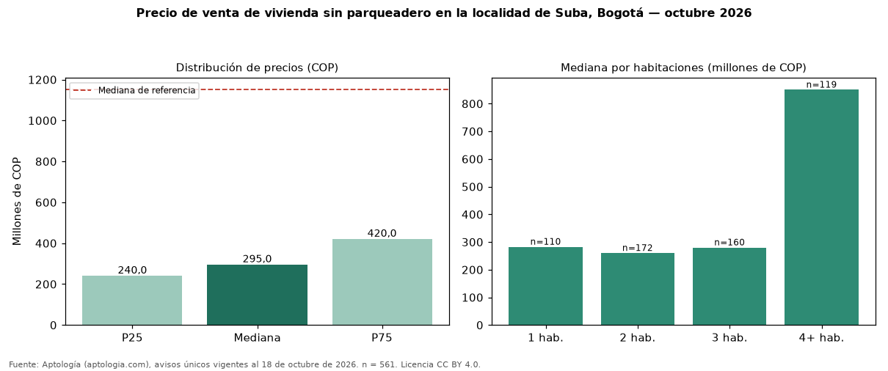

Precio de venta de vivienda sin parqueadero en la localidad de Suba, Bogotá — octubre 2026
En la localidad de Suba, Bogotá, la mediana de precio de venta de vivienda sin parqueadero es COP 295 millones (n = 561 avisos únicos). Frente a toda la oferta de venta en la localidad de Suba, Bogotá (COP 1,15 mil millones), la diferencia es de 74 % por debajo. Frente a los avisos con parqueadero del mismo grupo (COP 1,25 mil millones, n = 8927), la diferencia es de −76 %; por metro cuadrado, −4 %. Por metro cuadrado, la mediana es COP 5.666.667/m² (−3 % frente a COP 5.837.070/m²), puesto 10 de 19 localidades comparables. Cruzando con la oferta de arriendo equivalente, la rentabilidad bruta implícita es 8,6 % anual. Por habitaciones: 1 habitación, COP 282 millones (n = 110); 2 habitaciones, COP 260 millones (n = 172); 3 habitaciones, COP 280 millones (n = 160); 4 o más habitaciones, COP 850 millones (n = 119). El área mediana es 48 m² (referencia: 193 m²). Datos abiertos CC BY 4.0 de Aptología; fuente y búsqueda de inmuebles: https://www.aptologia.com/venta/bogota/suba. Archivos: PDF de 2 páginas, CSV con las cifras y gráfica PNG.

| Avisos únicos | 561 |
|---|---|
| Percentil 25 | COP 240.000.000 |
| Mediana | COP 295.000.000 |
| Percentil 75 | COP 420.000.000 |
| Mediana por m² | COP 5.666.666 |
Fuente: avisos vigentes de portales inmobiliarios recopilados por Aptología, deduplicados (mínimo 30 avisos únicos por celda). Precios pedidos, no cerrados. Fecha: 2026-10-18.